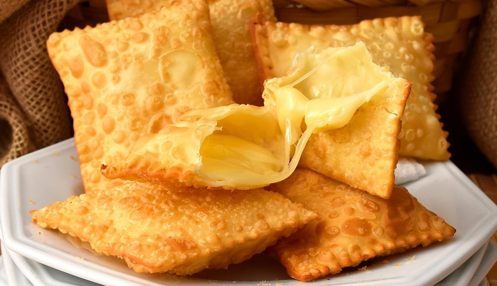

Junta en una cacerola la leche condensada con la manteca y el coco rallado, lleva a fuego medio y cocina a temperatura media-baja revolviendo constantemente hasta que la mezcla tome mayor textura y veas el fondo de la cacerola. Una vez lista, retira del fuego.
Paso 2
Traspasa la preparación a un recipiente plano y extendido, lleva la preparación a refrigeración para que se enfríe y tome mayor textura. Luego toma pequeñas cantidades y dale forma con tus manos, obteniendo bolita de 1.5 a 2 cm aproximados.
Paso 3
Finalmente, pásalas por coco rallado, mostacillas, azúcar rubia etc., como más te guste. Idealmente guárdalas en refrigeraación para mantener su textura y forma. Sírvelas.
Paso 4
Disfrutar
Pastel

Ingredientes
1/2 kg harina de trigo
2 huevos
2 cucharas soperas de aceite
1 cucharadita de sal
1 taza de agua fria
Queso cortado en cubitos
¡A cocinar!
Paso 1
Ponga la harina de trigo tamizada en un bowl y haga un espacio en el medio.
Paso 2
Agregue los huevos y el aceite y amase.
Paso 3
Disolver la sal en el agua fría.
Paso 4
Agregar de a poco el agua con sal a la mesa hasta obtener una masa muy suave que se despegue de las manos.
Paso 5
Hacer una bola con la masa y dejar descansar por lo menos una hora. cubrir la masa con un paño.
Paso 6
Estirar la masa con un rodillo sobre una superficie enharinada y cortar la masa en rectángulos.
Paso 7
Poner los cubitos de queso en el centro doblar y apretar bien los bordes.
Paso 8
freír los pastéis en aceite caliente.
Paso 9
Poner los pastéis en papel de cocina para absorber el aceite sobrante.
Paso 10
Disfrutar
Caipirinha
Ingredientes
200ml de Cachaça
1 Lima mediana
30g de Azucar
Hielo
Paso 1
Vamos a limpiar la lima y cortar a la mitad. Picamos una de esas mitades en trocitos que colocamos en un vaso.
Paso 2
Agregamos el azúcar y machacamos con un mortero. La lima ira soltando jugo que se mezclara con el azúcar.
Paso 3
Agregamos ahora mucho hielo triturado de tal manera que recubrimos las tres cuartas partes del vaso.
Paso 4
Terminamos con la cachaça y revolvemos con un mezclador.